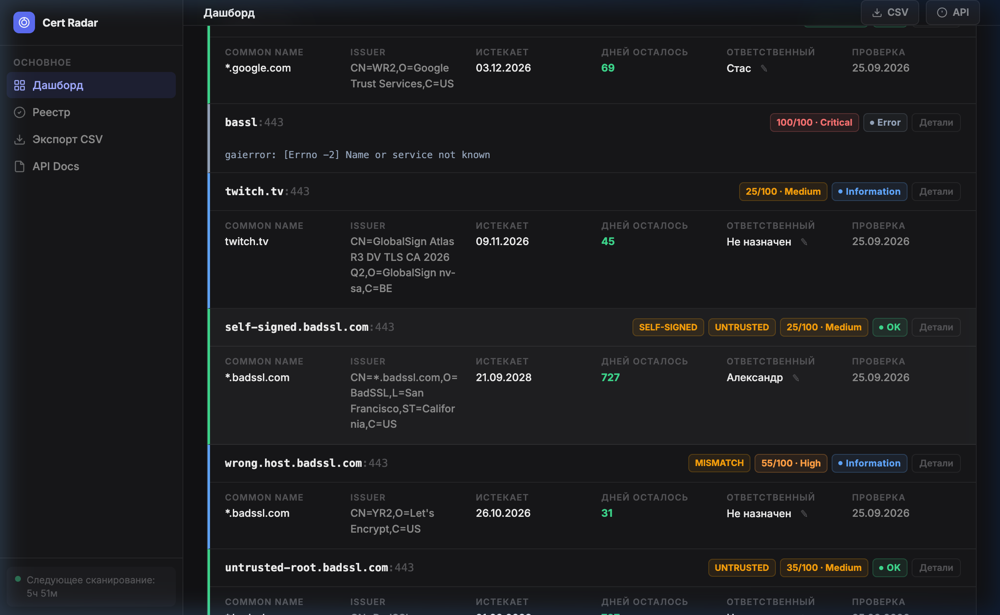

Автоматическое обнаружение, инвентаризация и мониторинг TLS/SSL-сертификатов корпоративной инфраструктуры. Оценка рисков и рекомендации в реальном времени.
Проблема
Крупные компании управляют сотнями TLS-сертификатов. Истекший или некорректно настроенный сертификат — это простой сервиса, потеря данных и репутации.
Решение
Единая платформа для сканирования, инвентаризации и мониторинга всех TLS-сертификатов вашей инфраструктуры.
DNS-имена, IP-адреса, URL и CIDR-сети. Параллельное сканирование за секунды.
Оценка от 0 до 100 баллов. Причины риска и конкретные рекомендации для каждого сертификата.
Уведомления о критических проблемах прямо в мессенджер. Warning, Critical, Expired.
Фоновая проверка каждые 6 часов. Настраиваемый интервал. Без ручного вмешательства.
Демо
Тёмный минималистичный интерфейс в стиле Linear. Sidebar-навигация, карточки сертификатов, цветовая индикация статусов, фильтры и поиск.

Risk Engine
| Risk Score | Уровень |
|---|---|
| 0 — 20 | Low |
| 21 — 50 | Medium |
| 51 — 80 | High |
| 81 — 100 | Critical |
Архитектура
Асинхронный бэкенд, серверный рендеринг dashboard, REST API с документацией OpenAPI.
Один docker compose up — и всё работает. Healthcheck, автоматический рестарт.
Асинхронные алерты. Markdown-форматирование. Настройка через .env.
REST API
9 эндпоинтов. Интерактивная документация Swagger. CSV-экспорт.
| Метод | Endpoint | Назначение |
|---|---|---|
| POST | /api/scan | Проверить список адресов |
| GET | /api/certificates | Реестр сертификатов |
| PATCH | /api/certificates/{id}/owner | Назначить ответственного |
| GET | /api/certificates/{id}/history | История Risk Score |
| GET | /api/scheduler/status | Статус планировщика |
| POST | /api/test-telegram | Тестовое уведомление |
| GET | /api/export/csv | Экспорт в CSV |
| GET | /health | Healthcheck |
| GET | /docs | OpenAPI Docs |
Certificate Radar — ваш радар безопасности TLS-инфраструктуры.
Вопросы?